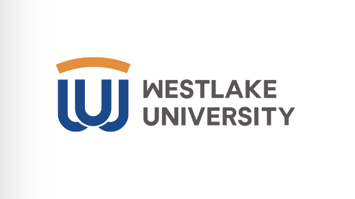
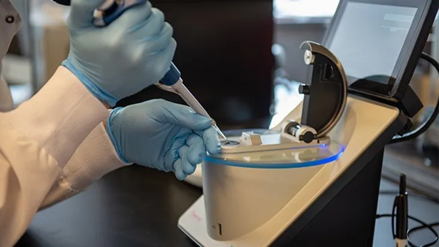
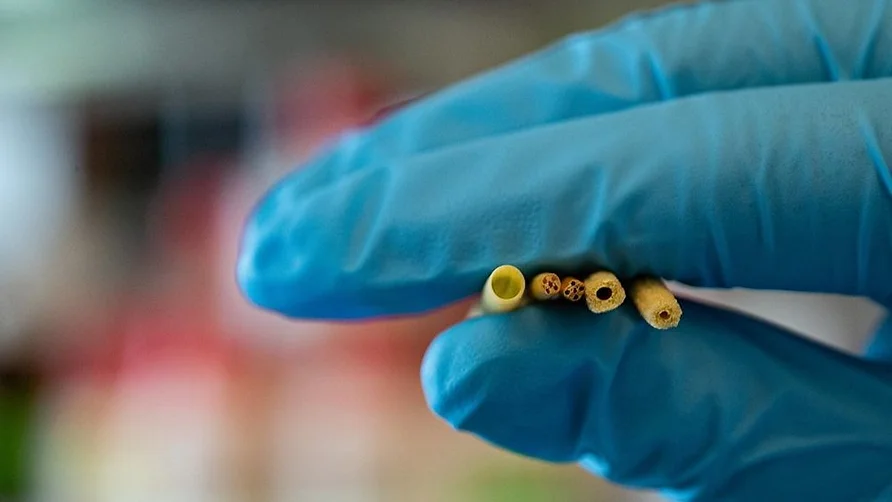
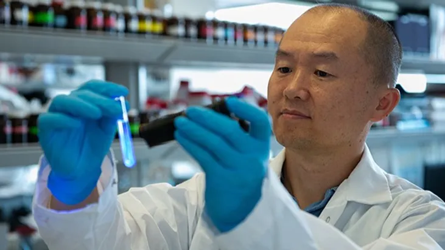

B-REAL
Biomaterials and Regenerative Engineering
Alliance Laboratory

News Archive

- May 07, 2023
- Congratulations to Dingbowen Wang for achieving his doctoral degree. Once again, congratulations, Dr. Dingbowen Wang!
- 
- April 3, 2023
- Congratulation to Yuki Yoshda on receiving Barry Goldwater Scholarship, the most prestigious undergraduate scholarship in natural science, mathematics, and engineering in America.
- April 3, 2023
- Undergraduate student, Yuki Yoshida published a first-author journal paper in Engineered Regeneration. (https://doi.org/10.1016/j.engreg.2023.03.008)
- November 7, 2022
- Congratulation to Mariana Yasmin De Moura Lira Claudino and Emily Savidge for being selected as a member of Equity Scholars Program - a scholarship program to fund student participation in undergraduate research.
- 
- September 9, 2022
- Dr. Lance Lian published in Cell Reports Methods on new gene editing tools to improve stem cell editing efficiency.
- June 28, 2022
- Congratulation to "Bioactive Materials" journal, the newly released 2021 Impact Factor is 16.874.
- May 24, 2022
- In collaboration with Dr. April Armstrong, Chair of the Department of Orthopedics and Rehabilitation, Dr. Yang received a COE Multidisciplinary Seed Grant to work on the next generation of citrate-based biomaterials for bone regeneration.
PSU COE News
- 
- May 17, 2022
- Dr. Yang received a R01 grant from NINDS to work on epigenetic nerve guidance conduits for peripheral nerve regeneration.
PSU News (08/16/22)
- 
- May 2, 2022
- Dr. Yang teamed with Prof. Kytai Nguyen at UT Arlington and Prof. Ralph Mason at UT Southwestern to receive a R01 grant from NHLBI and to work on therapeutic nanoparticles to stimulate angiogenesis for the treatment of peripheral arterial disease.
PSU COE News (08/12/22)
- April 24, 2022
- Dr. Yang was elected a Full Member of Sigma Xi, the Scientific Research Honor Society.